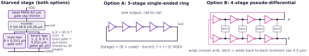
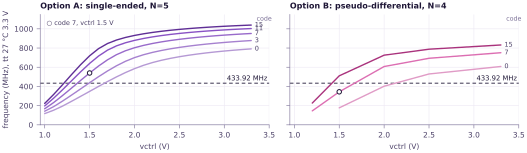
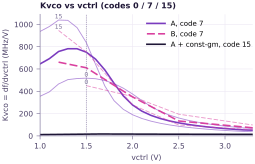
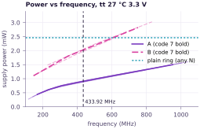
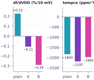
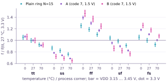

Preliminary · pre-silicon, schematic simulation, not extracted
Tunable 433.92 MHz ring oscillator: GF180 candidate options
Matt Venn / Zero to ASIC Course2026-11-07PreliminaryPre-silicon · schematic simulation (ngspice, gf180mcuD nfet/pfet_03v3) · not extracted
Description
Option A uses about 2.2× less power than Option B
and rejects supply changes about 2.7× better; B gives the complementary outputs the antenna drive needs.
As drawn, both tune far too steeply with vctrl; a constant-gm bias fixes this. A plain inverter ring is the untuned baseline.
Both are current-starved ring VCOs (voltage-controlled oscillators) for a Tiny Tapeout GF180MCU transmitter. Each inverter's
current is set by a PMOS head and an NMOS foot of binary legs switched between vctrl and 0: the 4-bit code tunes
coarsely, vctrl finely. A is a 5-stage single-ended (SE) ring; B is two 4-stage rings tied by weak cross-coupled inverters.
Features
Coarse: 4-bit binary foot legs (k = 8 base), ×2.06 (A) / ×2.89 (B) at vctrl 1.5 V
Fine: vctrl on every leg; 117–1,039 MHz (A), 146–832 MHz (B)
Power at 433.92 MHz: A 0.91 mW, B 2.03 mW (plain ring 2.46 mW)
A + constant-gm bias (a β-multiplier, whose current is set by an on-chip resistor, not vctrl): 5-bit coarse,
±3.8 % fine; Kvco (frequency change per volt of vctrl) about 16 MHz/V vs 782 for A
3.3 V devices only, no inductors, small area

Key specifications
tt, 27 °C, 3.3 V unless noted
A · SE N=5
B · diff N=4
A + const-gm bias
Plain ring (baseline)
Tuning span (all codes, vctrl)
117–1,039 MHz
146–832 MHz
236–728 MHz
none
Coarse range, top / bottom code
×2.06 (1.5 V)
×2.89 (1.5 V)
×2.84, about 15 MHz steps
—
Fine tuning: Kvco at 433.92 MHz
782 MHz/V
522 MHz/V
about 16 MHz/V, ±3.8 %
—
df/dVDD, %/10 mV (kHz at 433.92 MHz)
−0.11 (−474)
−0.29 (−1,269)
−0.27 (−1,170)
+0.23 (+993)
Tempco, 0–70 °C
−2,197 ppm/°C
−1,982 ppm/°C
+2,952 ppm/°C
−1,843 ppm/°C
PVT spread (process, VDD, temp.)
×0.68 … ×1.42
×0.62 … ×1.52
×0.78 … ×1.23
×0.73 … ×1.29
Power at 433.92 MHz
0.91 mW
2.03 mW
1.59 mW at 508 MHz
2.46 mW
Outputs
1, single-ended
2, complementary
1, single-ended
1, single-ended

Fig. 1. Frequency vs vctrl for codes 0, 3, 7, 11, 15 (light → dark), tt 27 °C 3.3 V; at code 7, A reaches
433.92 MHz at 1.36 V and B at 1.67 V. Points below about 110 MHz are outside the measurement window (10 periods in 100–200 ns) and are not plotted. B: coarse sweep (codes 0/7/15, vctrl 0.9/1.2/1.5/2.0/2.5/3.3 V), so its curves and Kvco are coarse.
Zero to ASIC CourseGF180 433.92 MHz VCO
Preliminary · pre-silicon, schematic simulation, not extracted

Fig. 2. Kvco vs vctrl: about 782 MHz/V for A at 433.92 MHz, about 16 MHz/V with constant-gm bias (black). A solid,
B dashed; code 7 bold, codes 0 and 15 faint.

Fig. 3. Supply power vs frequency for every code: A draws 0.91 mW at 433.92 MHz, B 2.03 mW.
The plain ring draws about 2.5 mW whatever N is.

Fig. 4. Supply sensitivity (±150 mV) and tempco (0–70 °C, fixed vctrl) at tt; A is lowest at −0.11 %/10 mV.

Fig. 5. PVT (process, voltage, temperature) spread, each normalised to its own tt 27 °C 3.3 V; A spans ×0.68 to ×1.42. A and B at code 7, vctrl 1.5 V.
Trade-offs
Option A: single-ended, N=5
Lower power: 0.91 mW at 433.92 MHz vs 2.03 mW for B
(2.09 vs 4.67 µW/MHz).
Better supply rejection (PSRR): −0.11 vs −0.29 %/10 mV, opposite in sign to the plain ring as the current is fixed and the swing is VDD.
Kvco at 433.92 MHz (code 7): 782 MHz/V vs 522 for B (higher: A sits lower on its curve, at 1.36 V).
One output only: the antiphase antenna drive needs an extra inverter, which adds skew.
Option B: pseudo-differential, N=4
Complementary outputs a0 / b0 for the antiphase antenna drive, no extra splitter.
Possibly less flicker upconversion (low-frequency transistor noise turned into phase noise), as symmetric waveforms give a smaller
ISF (impulse sensitivity function) average; needs a phase-noise simulation.
No tail current source, so supply rejection is about 2.7× worse than A.
About 2.2× the power of A at 433.92 MHz and 1.7× the devices.
Sizes: core Wn/Wp 2/5 µm, L 0.28 µm; starving L 1 µm. Plain-ring figures from N=15. Tuning span: codes 0–15, vctrl 1.0–3.3 V
(A + const-gm: codes 0–31, vctrl 0–3.3 V; PVT and sensitivities at code 15, vctrl 1.65 V). Data: sim/vco/.
Regenerate: python3 docs/datasheet/make_datasheet.py.